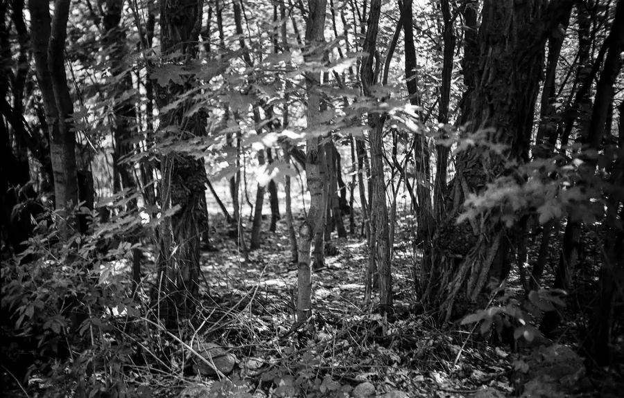
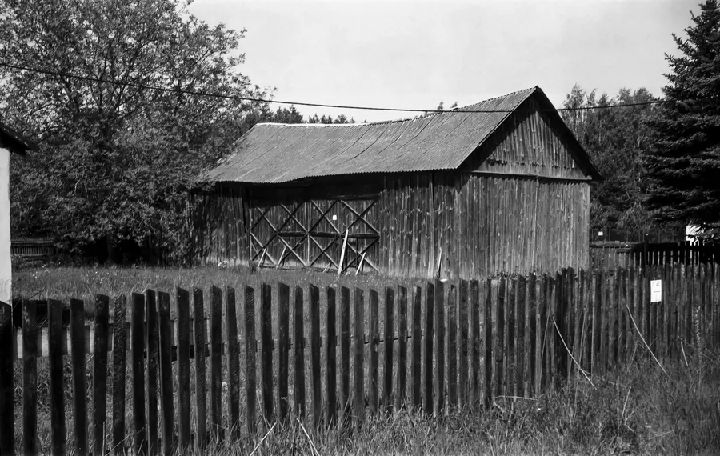
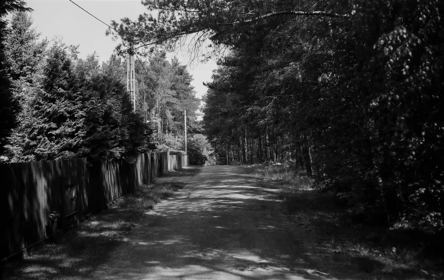
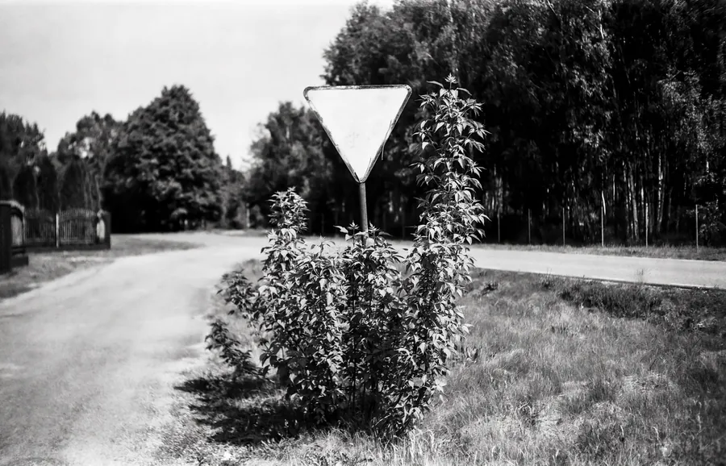

Przejdź do treści
Zenbliski
Menu
Archiwalne
Analogowe
Kolekcja
Akcesoria foto
Materiały reklamowe
Artykuły – blog
Foto ciekawostki
Cyfrowe
Analogowe
Voigtländer Bessa RF, Fomapan 100/120, Mazowsze 2024 r.
Aparat
Voigtländer Bessa RF
Film
Fomapan 100, typ 120
Miejsce
Mazowsze, 2024 r.




Poprzednia
Ricoh
FF-1,
AGFA Photo 400, Warszawa 2023 r.
Następna
Bronica ETRSi, Zenzanon 40 mm, Fomapan 100/120, Mazowsze 2025 r.